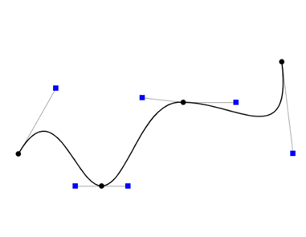
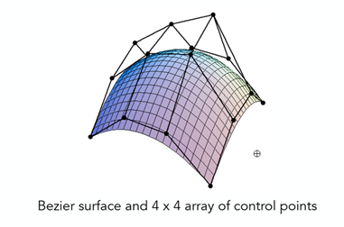

贝赛尔曲线的数学原理与工程运用
博主原创文章，转载请说明出处，但是不说我也管不了你🏳️
前言
之前在学习安卓开发涉及到图形绘制时，发现某个类提供了一个方法可以用来绘制曲线，后来那个方法绘制的曲线就是贝赛尔曲线。当时听着这个名字感觉很牛X的样子，然后又进一步了解了到底什么是贝塞尔曲线，了解完后我直呼卧槽。
所以本文诞生，就是单纯想写一篇贝塞尔曲线的介绍文。本文将简短地介绍贝塞尔曲线的发展历史、数学原理，最后会给出几个贝塞尔曲线的相关应用示例。
正文
一. 贝赛尔曲线简述
贝塞尔曲线（英语：Bézier curve）最初由保尔·德·卡斯特里奥于1959年运用德卡斯特里奥算法所开发，他用稳定数值的方法求出了贝塞尔曲线。但贝塞尔曲线于1962年才由法国工程师皮埃尔·贝塞尔（Pierre Bézier）所广泛发表，他借用贝塞尔曲线完成了汽车的主体设计[1]。

贝塞尔曲线有着很多特殊的性质，其如今已是计算机图形学及相关领域中常使用的重要参数曲线，在诸如计算机字体设计、动画设计、机器人运动平滑控制中都有运用到贝赛尔曲线。贝塞尔曲线可以组合起来形成贝塞尔样条曲线，或者推广到更高维度以形成贝塞尔曲面。

这里介绍两个网站，一个是贝赛尔曲线动画，从该网站给出了几个贝赛尔曲线动态图演示；另一个是贝赛尔曲线demo，在该网站可以手动改变端点来感受贝赛尔曲线的变化。
二. 数学公式简述与推导
贝赛尔曲线的通式实际上是一个与二项展开式有关的一个多项式，本文仅在通项的推导上做出简单的演示，对于贝塞尔曲线的其他性质不做讨论。下面将从一次开始逐步推导出N次的贝塞尔曲线。
2.1 一次贝赛尔曲线
一次贝塞尔曲线又可以叫做线性贝塞尔曲线，因为一次的贝塞尔曲线实际上就是两个点的连线，即一条直线段，如图：
图中有一条由点P₁(6,6)、点P₂(2,2)连接形成的直线段，P₀为该线段上的动点，运动方向由P₂到P₁,图中红色线段即为P₀的运动轨迹。可知P₀的轨迹方程为： \[ B_{1}(t)=P_{2}+(P_{1}-P_{2})t,t\in[0,1] \]
化简得：
\[ B_{1}(t)=P_{1}t+P_{2}(1-t),t\in[0,1] \]
注意上式中的P₁、P₂代表一个二元式，表示了一个坐标如P₁为(2,2)，即B₁(t)就是P₀坐标的变化方程(轨迹坐标方程)，而这个轨迹方程即为一个一次贝赛尔曲线的轨迹方程，其中t为控制P₀在线段上运动范围的变量，其值实际代表了线段P₀P₂与线段P₁P₂的长度比值。将P₁、P₂的坐标值代入，可得以上示例图中的贝赛尔曲线方程为： \[ B_{1}(t)=(6,6)*t+(2,2)*(1-t) =(2+4t,2+4t),t\in[0,1] \]
2.2 二次贝赛尔曲线
二次贝赛尔曲线即其方程的最高次为二次。如图，在平面上任取三点并依次用线段连接：
这里为了方便取P₁(6,6)、P₂(2,2)、P₃(10,2)。设t为一个变量，且t∈[0,1]。在线段P₂P₁、P₁P₃两条线段上分别取A、B共两点，且令各线段长度满足以下关系： \[ \frac{P_{2}A}{P_{2}P_{1}}=\frac{P_{1}B}{P_{1}P_{3}}=t \]
当t=0.5时，如图：
最后，在线段AB上取一点P₀，使其满足： \[ \frac{AP_{0}}{AB}=t \]
同样当t=0.5时，如图所示：
实际上此时单独看线段AB上的P₀其实与一次贝塞尔曲线中的P₀一样。同时还可以看出，如果单独看P₂P₁上的A点、P₁P₃上的B点，实际上都是一次贝赛尔曲线的情况，而二次贝赛尔曲线就是在一次贝赛尔曲线的基础上再将线段的端点都限制在一次贝赛尔曲线轨迹的条件下，由此原P₀点的运动轨迹就变为了二次贝赛尔曲线，如图：
最后求P₀的轨迹方程，也就是二次贝赛尔曲线的方程。思路为先求分别求出点A与点B的轨迹方程，最后再借其求出点P₀的轨迹方程：
因为点A与点B的轨迹方程分别为： \[ \begin{cases} a(t)=P_{2}+(P_{1}-P_{2})t\\ b(t)=P_{1}+(P_{3}-P_{1})t \end{cases} ,t\in[0,1] \]
故点P₀的轨迹方程为： \[ B_{2}(t)=a(t)+[b(t)-a(t)]t \]
化简得： \[ B_{2}(t)=2t(1-t)P_{1}+(1-t)^2P_{2}+P_{3}t^2 \]
上式有点眼熟？没错！去掉P₁、P₂、P₃的点坐标，得到一个多项式： \[ f(t)=(1-t)^2+2t(1-t)+t^2=[t+(1-t)]^2 \]
这不就是一个二项展开式吗！
2.3 三次贝赛尔曲线
从上面的推导其实可以看出，三次贝赛尔曲线实际是在二次贝赛尔曲线的基础上将线段的三个点约束在三个一次贝塞尔曲线上，由此原有的二次贝塞尔曲线轨迹就变为了三次贝塞尔曲线。所以三次贝塞尔曲线的方程可以为： \[ B_{3}(t)=P_{0}(1-t)^3+3P_{1}t(1-t)^2+3P_{2}t^2(1-t)+P_{3}t^3,t\in[0,1] \]
可以看出去掉点坐标后,实际上就是[t+(1-t)]³的展开式。
2.4 N次贝塞尔曲线
由以上可得知，实际上一次贝赛尔曲线可以通过约束升阶为多次贝赛尔曲线，当然多次贝塞尔曲线也可以不停降次至一次贝塞尔曲线。同时其与点坐标无关的通式实际上是一个二项展开式[2]，例如N次贝赛尔曲线对应[t+(1-t)]ⁿ。故其通项可以推导为：
给定多个定点P₀、P₁、P₂、P₃、...、Pn，则其贝赛尔曲线为： \[ B_{n}(t)=\sum^{n}_{i=0}C^{i}_{n}P_{i}(1-t)^{n-i}t^{i},t\in[0,1] \]
三. 相关应用示例介绍
实际上，许多绘图工具都会用贝赛尔曲线，例如PS里拉伸图片时就是用的贝赛尔曲线来约束图片变化路径。本来准备演示一下PS中的贝塞尔，但是失败了。完。
参考文献
- 维基百科,贝塞尔曲线[EB/OL],https://zh.wikipedia.org/zh-cn/貝茲曲線 ↩︎
- FrancisZhao,曲线篇: 贝塞尔曲线[EB/OL](2020-04-28)，https://zhuanlan.zhihu.com/p/136647181 ↩︎ ↩︎